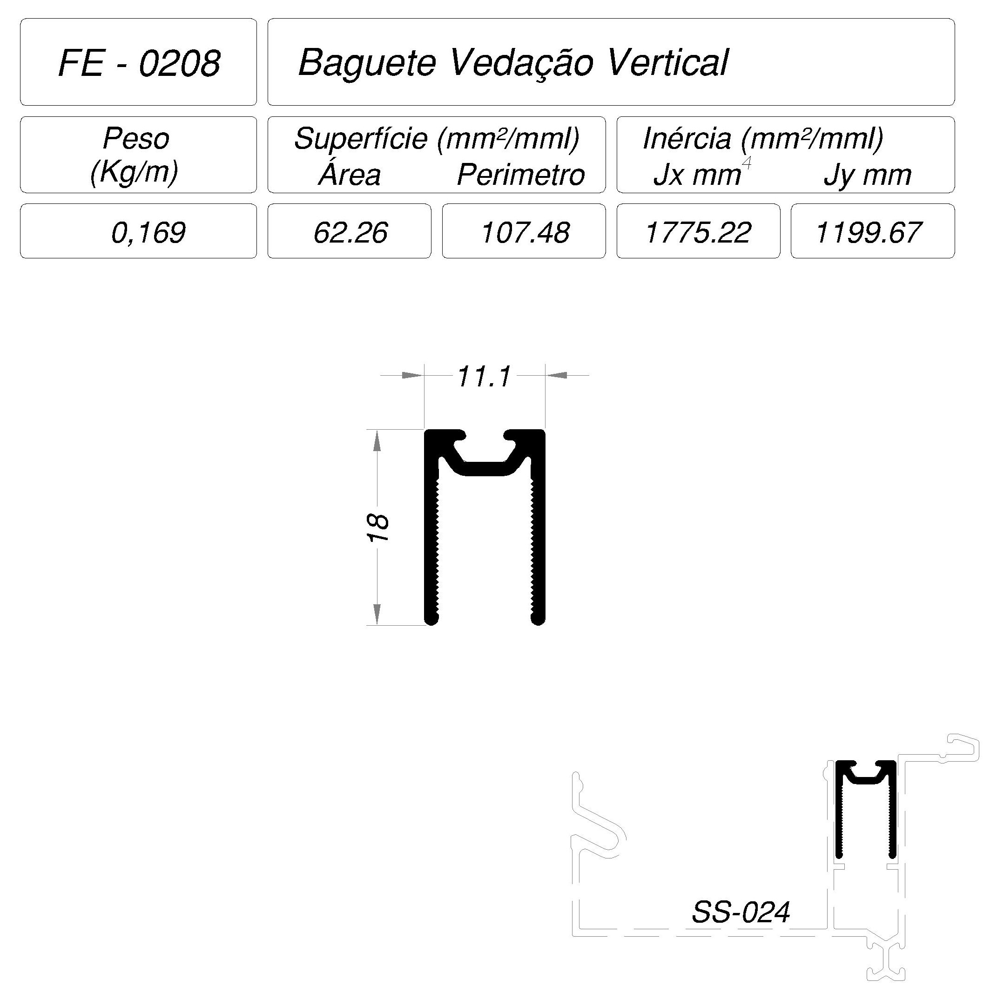
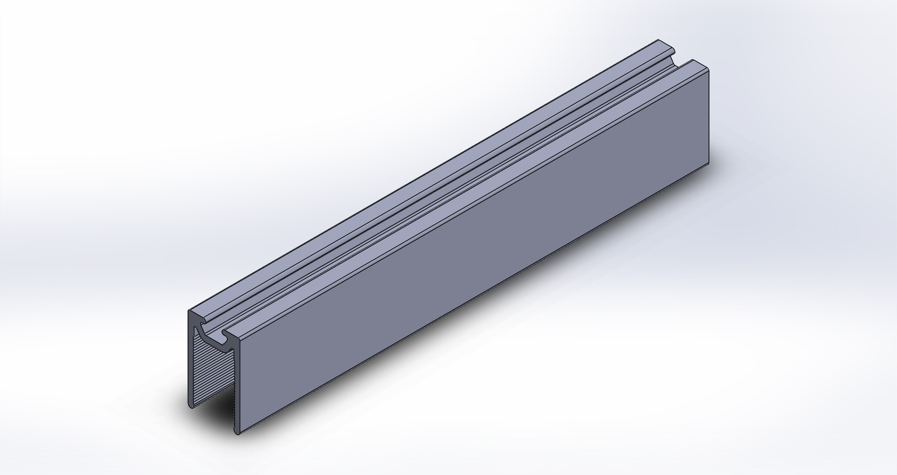

Perfil de alumínio
FE-0208 — Baguete Vedação Vertical
FE-0208
Baguete Vedação Vertical

abrir em tamanho original| Peso | 0,169 kg/m |
| Superfície — área | 62,26 mm²/mml |
| Superfície — perímetro | 107,48 mm²/mml |
| Inércia Jx | 1.775,22 mm⁴ |
| Inércia Jy | 1.199,67 mm⁴ |

VISTA ISOMÉTRICA · referência de apresentação
Jx/Jy calculados do DXF limpo (cad-fonte/ARQUIVOS/CALCULO) em 2026-10-28, método validado no SS-108. Wx, Wy e centroide calculados do mesmo DXF, na orientação da ficha.
Usado em:
SkinGlass